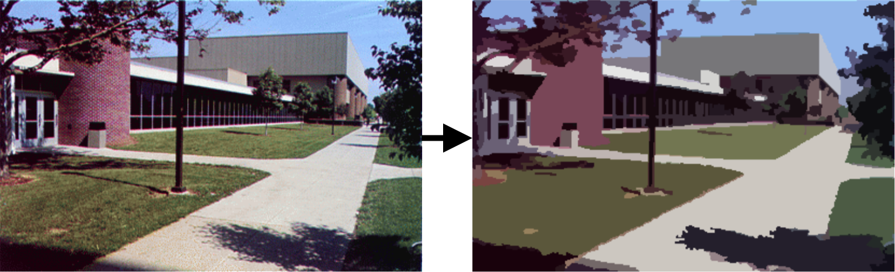

均值偏移滤波(Mean Shift Filtering)

均值偏移
均值偏移滤波是计算机视觉和图像处理中常用的数据聚类算法。对于图像的每个像素(具有物理空间位置和特定颜色信息)，计算一组相邻像素(在定义的空间半径和颜色距离内). 物理空间上坐标2个—x、y，色彩空间上坐标3个—R、G、B(或任何3维颜色空间)，构成一个5维的空间球体。对于这组相邻像素，将计算新的空间中心点(空间平均值)和新的颜色平均值。这些计算出的平均值将用作下一次迭代的新中心点。所描述的过程将重复进行，直到空间和颜色(或灰度)平均值停止变化为止。在迭代结束时，最终的平均颜色将分配给该迭代的开始位置。这一章我们必须也从另一个角度去看图像。我们一般都把图像看作是一个三维的矩阵，即按像素位置排位。但图像数据还有一个特性，就是颜色(建议看颜色空间了解更多)。我们也可以按颜色的3个通道值，排出像是以下的颜色空间点云。 以下动画解释均值偏移的步骤。这步骤有时也称为均值偏移聚类(mean shift clustering). 当然，均值偏移并没有以下动画那么简单，毕竟均值偏移使用的是一个5维的空间球体，而下面的只是个2维球体示范。
OpenCV pyrMeanShiftFiltering
pyrMeanShiftFiltering会多出一个maxLevel参数。当maxLevel>0时，将建立maxLevel+1级别的高斯金字塔(gaussian pyramid)，并且上面(均值偏移)的过程首先在最小的层上运行。之后，结果将传递到较大的图层，并且仅在图层颜色与金字塔的较低分辨率图层(上一层)相差超过自定义颜色距离的那些像素上再次运行迭代。这使得颜色区域的边界更加清晰。函数
void pyrMeanShiftFiltering(InputArray src, OutputArray dst, double sp, double sr, int maxLevel=1, TermCriteria termcrit=TermCriteria(TermCriteria::MAX_ITER+TermCriteria::EPS, 5, 1) )
参数
src —— 源8位3通道图像。 dst —— 与源格式和大小相同的目标图像。 sp —— 空间半径。 sr —— 颜色距离。 maxLevel —— 选填。金字塔的最大级别。 termcrit —— 选填。终止标准：何时停止均值漂移迭代。
例子
#include <opencv2/opencv.hpp>
using namespace cv;
void callback(int, void*);
int spatialRad = 50; // 空间窗口半径
int colorRad = 50; // 色彩距离
int maxPyrLevel = 2; // 高斯金字塔层数
int main() {
Mat img = imread("clown.jpg"); //读入图像
imshow("srcImg", img);
// 拉动条
namedWindow("param");
createTrackbar("sr", "param", &spatialRad, 50, callback, (void *) &img);
createTrackbar("cr", "param", &colorRad, 50, callback, (void *) &img);
// 初始化
callback(0, (void *) &img);
// 等待退出
waitKey(0);
destroyAllWindows();
return 0;
}
// 拖动条call函数
void callback(int, void* param) {
Mat &img = *(Mat*) param; // 指针类变换
Mat res; // 结果图
pyrMeanShiftFiltering(img, res, spatialRad, colorRad, maxPyrLevel); // 均值滤波
// 显示
imshow("Result", res);
}
在这个过程中，关键参数是sp和sr的设置，二者设置的值越大，对图像色彩的平滑效果越明显，同时函数耗时也越多。